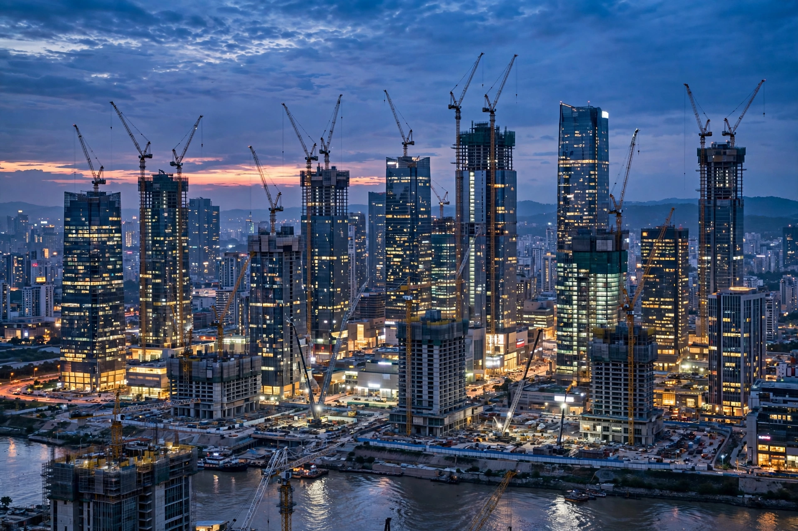

| Field | Development economics |
|---|---|
| Indicators | GDP per capita, HDI, literacy, life expectancy, poverty rates |
| Key institutions | World Bank, IMF, UNDP, regional development banks |
In the economics study of the public sector, economic and social development is the process by which the economic well-being and quality of life of a nation, region, local community, or an individual are improved according to targeted goals and objectives.
The term has been used frequently in the 20th and 21st centuries, but the concept has existed in the West for far longer. "Modernization", "Westernization", and especially "industrialization" are other terms often used while discussing economic development. Historically, economic development policies focused on industrialization and infrastructure; since the 1960s, they have increasingly focused on poverty reduction.
Whereas economic development is a policy intervention aiming to improve the well-being of people, economic growth is a phenomenon of market productivity and increases in GDP; economist Amartya Sen describes economic growth as "one aspect of the process of economic development." Sen's capability approach reframes development as the expansion of people's substantive freedoms — to be healthy, educated and able to participate in society — rather than income alone.
Post-war development economics debated big-push industrialisation, import substitution, and later export-oriented growth, exemplified by the East Asian "tiger" economies. The Washington Consensus of the 1990s emphasised liberalisation and macroeconomic stability; subsequent debate has stressed institutions (Acemoglu and Robinson), industrial policy, and the role of the state. Microfinance, conditional cash transfers and randomised evaluations of aid interventions (associated with Banerjee, Duflo and Kremer) reshaped empirical practice.
Since the 1992 Rio Earth Summit, development has been linked to environmental sustainability. In 2015 the United Nations adopted the Sustainable Development Goals (SDGs) — 17 goals, from ending poverty and hunger to climate action — as the global framework to 2030.
See also: Developing country · Human Development Index · Sustainable Development Goals